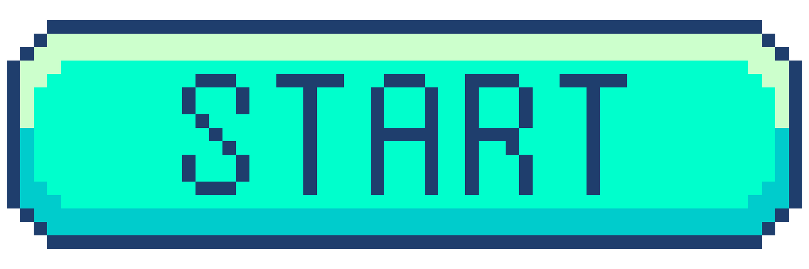
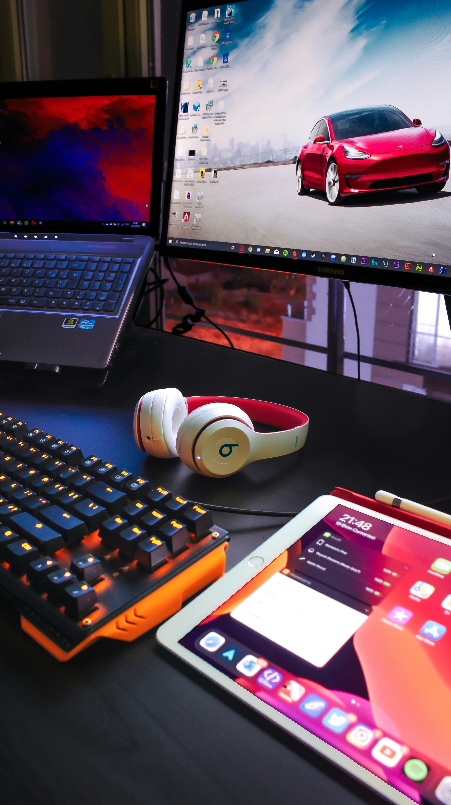
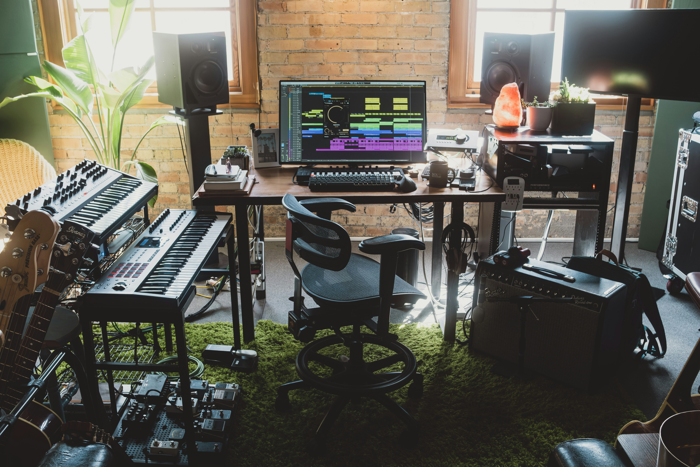
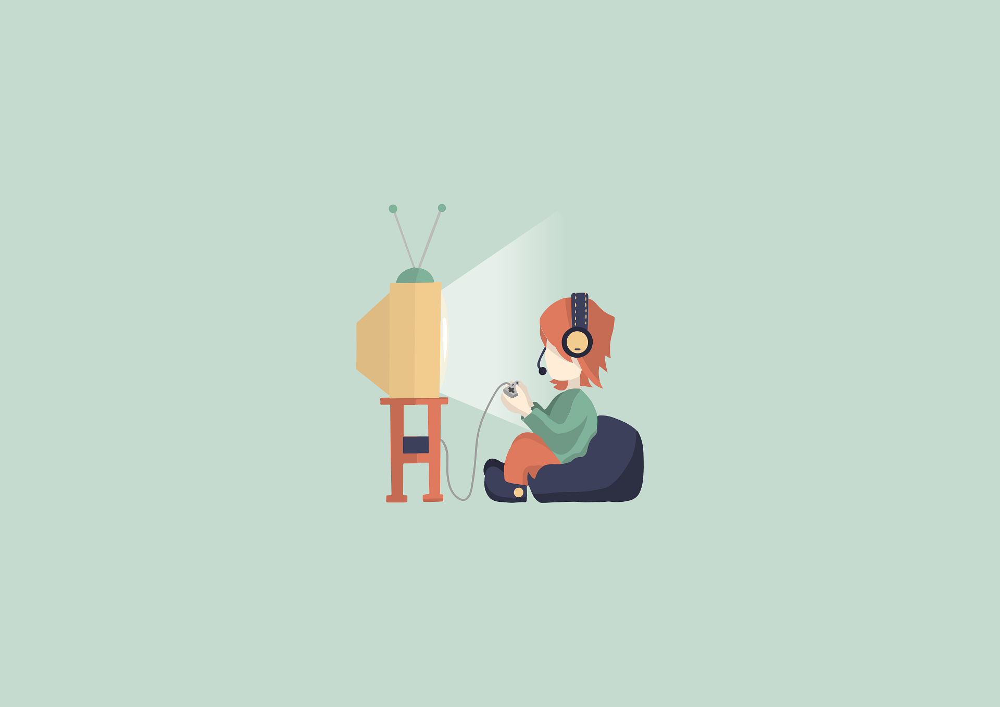

Binary Beats
Welcome to Binary Beats



Binary Beats is a cutting-edge music collective that specializes in crafting immersive soundtracks for video games. With a unique fusion of tech-driven beats, digital soundscapes, and rhythmic pulses, Binary Beats creates music that enhances gameplay and deepens player experiences. Whether it’s an intense boss battle, a serene open world, or a heart-pounding horror sequence, their soundtracks are designed to bring virtual worlds to life.
Drawing inspiration from both retro 8-bit classics and modern electronic music, Binary Beats delivers dynamic compositions tailored to the aesthetic and emotional tone of each game. Their sound combines a rich blend of synthesizers, evolving textures, and glitchy rhythms to create a futuristic, yet nostalgic atmosphere, making them a go-to for indie developers and major studios alike.
We’d love to hear from you! Whether you’re an indie developer, game studio, or simply passionate about gaming soundtracks, feel free to reach out. Let’s create something amazing together.
Please fill out the form below and give us a small description about you, as well as what services you're looking for. We will get back to you as soon as we can. Thank you!